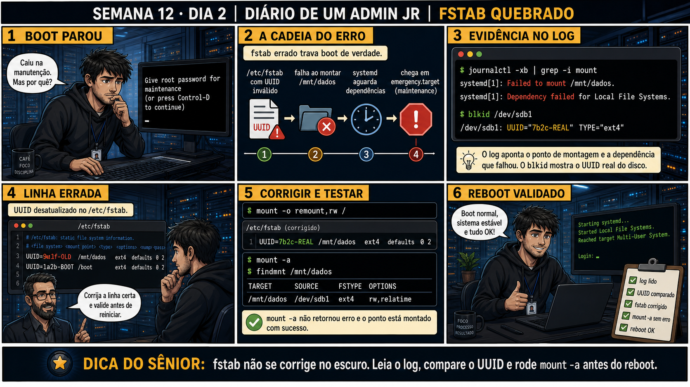

journalctl -xb | grep -i mount em menos de um minuto e
achou a causa real: o fstab ainda apontava pro UUID do disco antigo, que não existia mais fisicamente. O
disco novo tinha um UUID diferente, óbvio uma vez que alguém procurou no lugar certo. A correção real
levou 2 minutos depois disso. A lição não foi técnica — foi que a mensagem "Give root password for
maintenance" nunca é a causa, é só a PORTA pra você investigar a causa real. Tentar resolver na tela de
manutenção sem antes ler o log é como tentar adivinhar a senha de um cofre sem primeiro ler o bilhete que
já diz onde está a chave.
Semana 12 · Dia 2 | Nível Júnior
Fstab Quebrado
fstab não se corrige no escuro — leia o log, compare o UUID e rode mount -a antes do reboot
ANTES DE ALTERAR, OBSERVE. DEPOIS DE ALTERAR, VALIDE.
1. O chamado
#7512
PRIORIDADE MÉDIA
08:05
aberto por: monitoramento
host: srv-app-09 · serviço: boot — emergency.target
"Give root password for maintenance (or press Control-D to continue). Servidor caiu na manutenção depois do reboot agendado."
Diferente do rescue de propósito da semana passada, esse é sintoma. O que no /etc/fstab pode ter causado isso?
💡 Passa o mouse nas palavras destacadas pra ver uma dica rápida — clica se quiser a explicação completa com analogia.
2. O sênior te conta
Semana passada, outro ticket
Um servidor caiu na tela de manutenção logo depois de trocar um disco de dados por um novo, maior. O
técnico de plantão, vendo "Give root password", assumiu que era um problema de senha ou de permissão e
passou 20 minutos tentando combinações de credenciais antigas — sem sucesso, porque não era isso. Um
colega chamado depois olhou o log com
3. Decodificador de conceitos
Clica em qualquer termo pra ver a definição completa e uma analogia do dia a dia:
4. Ferramentas e leitura da evidência
| Comando | O que observar e por que importa |
|---|---|
journalctl -xb | grep -i mount | Mostra a falha de montagem e a dependência afetada. |
blkid | Mostra o UUID real de cada partição — a fonte da verdade pra comparar com o fstab. |
mount -a | Tenta montar tudo que está no fstab — sem erro, a correção provavelmente está certa. |
findmnt /mnt/dados | Confirma se um ponto específico está montado corretamente, com detalhes. |
# journalctl -xb | grep -i mount systemd[1]: Failed to mount /mnt/dados. systemd[1]: Dependency failed for Local File Systems. # blkid /dev/sdb1 /dev/sdb1: UUID="7b2c-REAL" TYPE="ext4" --- /etc/fstab (linha errada) --- UUID=9e1f-OLD /mnt/dados ext4 defaults 0 2 --- corrigido --- UUID=7b2c-REAL /mnt/dados ext4 defaults 0 2 # mount -a # findmnt /mnt/dados TARGET SOURCE FSTYPE OPTIONS /mnt/dados /dev/sdb1 ext4 rw,relatime
5. Laboratório guiado — marca conforme for testando
Segurança: execute os testes apenas em VM descartável e confirme nomes de discos, hosts e arquivos antes de cada comando.
- Ação: em VM de laboratório, adicione uma linha ao /etc/fstab com um UUID inventado (inexistente) e reinicie.$ echo 'UUID=9e1f-INVENTADO /mnt/dados ext4 defaults 0 2' | sudo tee -a /etc/fstab $ sudo reboot
🔍 Detalhar esse comando
- echo '...'
- Imprime o texto entre aspas simples — aqui, uma linha completa no formato exigido pelo /etc/fstab (UUID, ponto de montagem, tipo, opções, dump, pass).
- | sudo tee -a
- Envia esse texto para o tee, que grava num arquivo protegido de root.
- -a
- Append: acrescenta a linha ao FINAL do arquivo, sem apagar o conteúdo já existente — sem -a, o tee sobrescreveria o /etc/fstab inteiro.
- /etc/fstab
- O arquivo que o systemd lê no boot para saber quais sistemas de arquivos montar automaticamente — um UUID inválido aqui trava o boot.
Resultado esperado: boot cai na tela de manutenção ("Give root password...").Por quê: systemd espera a montagem definida no fstab como pré-requisito de outras unidades — se ela não resolve, o boot não avança. - Ação: rode journalctl -xb | grep -i mount e identifique o ponto de montagem que falhou.# journalctl -xb | grep -i mount systemd[1]: Failed to mount /mnt/dados. systemd[1]: Dependency failed for Local File Systems.
🔍 Detalhar esse comando
- journalctl -xb
- Lê os logs do boot atual (-b) com contexto extra de erro (-x).
- | grep -i mount
- Filtra a saída só para linhas contendo 'mount' (sem diferenciar maiúsculas/minúsculas, -i) — reduz o volume de log ao que interessa para este incidente.
- Failed to mount / Dependency failed
- As duas linhas-chave: a montagem específica falhou, e isso quebrou a dependência do alvo 'Local File Systems', travando o boot.
Resultado esperado: linhas "Failed to mount" e "Dependency failed" visíveis. - Ação: rode blkid e compare o UUID real com o que está no fstab.# blkid /dev/sdb1 /dev/sdb1: UUID="7b2c-REAL" TYPE="ext4" # grep dados /etc/fstab UUID=9e1f-INVENTADO /mnt/dados ext4 defaults 0 2
🔍 Detalhar esses comandos
- blkid /dev/sdb1
- Lê os metadados gravados fisicamente na partição — o UUID e o tipo de sistema de arquivos REAIS deste disco, a fonte da verdade.
- grep dados /etc/fstab
- Filtra a linha do fstab relacionada ao ponto de montagem /mnt/dados — o UUID que o sistema ESPERA encontrar.
- comparação
- O UUID real (7b2c-REAL) não bate com o do fstab (9e1f-INVENTADO) — essa diferença é a causa raiz da falha de boot.
Resultado esperado: diferença clara entre o UUID do fstab e o UUID real do disco.Cilada comum: tentar "adivinhar" o UUID certo de memória ou copiar de outro servidor — sempre confirme com blkid no disco real desta máquina.🧑🏫 Aqui entra o Mentor (em breve): se houver mais de uma partição com sistema de arquivos parecido, este é o ponto onde o chat com o Sênior-IA vai ajudar a identificar qual UUID é o certo. - Ação: corrija a linha do fstab e teste com mount -a seguido de findmnt no ponto de montagem.# sed -i 's/9e1f-INVENTADO/7b2c-REAL/' /etc/fstab # mount -a # findmnt /mnt/dados TARGET SOURCE FSTYPE OPTIONS /mnt/dados /dev/sdb1 ext4 rw,relatime
🔍 Detalhar esse comando
- sed
- Stream editor — processa texto linha a linha aplicando uma transformação, sem abrir um editor interativo.
- -i
- Edita o arquivo NO LUGAR (in-place), sobrescrevendo o original em vez de só imprimir o resultado na tela.
- s/.../.../
- Comando de substituição: troca a primeira ocorrência do padrão à esquerda da barra pelo texto à direita.
- /etc/fstab
- O arquivo alvo da edição — corrigindo o UUID inventado para o UUID real, encontrado com blkid no passo anterior.
Resultado esperado: mount -a sem erro, findmnt mostrando o ponto montado corretamente.Se o seu resultado foi diferente
"mount: /mnt/dados: special device /dev/sdb1 does not exist" → sua VM não tem um segundo disco de verdade. Crie um disco de teste comfallocate -l 1G disco-teste.img && sudo losetup /dev/loop0 disco-teste.img && sudo mkfs.ext4 /dev/loop0, e use/dev/loop0no lugar de/dev/sdb1no exercício. - Ação: só então reinicie e confirme que o boot completa normalmente, sem cair em manutenção.Resultado esperado: boot normal, sistema estável, reproduzindo o painel 6 da prancha de hoje.
6. Antes de ver as opções — tenta responder
🧠 Recall ativo: qual é a cadeia completa de causa e efeito entre um UUID errado no fstab e a tela
de "Give root password for maintenance"?
/etc/fstab com
UUID
inválido → falha ao montar o ponto correspondente → systemd espera essa dependência e não consegue
avançar → sistema cai em
emergency.target
(a tela de manutenção). Cada elo da cadeia é visível no journalctl, se você souber procurar.
7. Questão comentada — clica numa alternativa
O boot travou na tela de manutenção. Você quer confirmar qual ponto de montagem
falhou e por quê, antes de tocar no fstab. Qual comando usar primeiro?
💡 Analogia do Sênior para Fixar: Um erro de digitação no '/etc/fstab' é como colocar uma pedra no trilho do trem: o boot trava no modo de emergência porque o sistema não consegue montar uma partição listada.
7.1 Você já corrigiu a linha do fstab com o UUID correto, mas ainda está na shell de manutenção
O reflexo de muita gente é reiniciar direto pra ver se resolveu.
Qual é o passo correto antes de reiniciar?
💡 Analogia do Sênior para Fixar: Usar UUIDs no fstab em vez de nomes (/dev/sda1) é como usar o CPF em vez de apelidos: garante que o disco certo seja montado mesmo se as portas SATA forem trocadas no hardware.
7.2 "Por que fstab usa UUID em vez do nome do dispositivo, tipo /dev/sdb1, direto?"
Um colega prefere editar o fstab usando /dev/sdb1 porque "é mais simples de ler".
Por que UUID é a prática recomendada, mesmo sendo menos legível?
💡 Analogia do Sênior para Fixar: A opção 'nofail' no fstab para discos secundários é a válvula de escape: permite que o servidor termine o boot normalmente mesmo se um storage externo estiver desconectado.
8. Procedimento profissional
- Na tela de manutenção, rode journalctl -xb | grep -i mount pra achar o ponto que falhou.
- Rode blkid pra confirmar o UUID real do disco correspondente.
- Compare com a linha do /etc/fstab e corrija o UUID desatualizado.
- Teste com mount -a e findmnt antes de reiniciar.
- Só reinicie depois de confirmar que a montagem funciona sem erro.
Prevenção
Adicione ao checklist de troca de disco um passo explícito: "atualizar UUID no fstab e
testar com mount -a" — antes de considerar a troca de hardware concluída. Isso evita que a próxima
reinicialização (que pode acontecer dias ou semanas depois) seja a primeira a revelar o problema.
9. Validação e encerramento
- O log foi lido antes de qualquer edição no fstab.
- O UUID foi comparado entre blkid (real) e fstab (configurado).
- O fstab foi corrigido com base na evidência, não em suposição.
- mount -a e findmnt confirmaram a correção antes do reboot final.
Rollback e limites
Antes de editar /etc/fstab, faça uma cópia (cp /etc/fstab /etc/fstab.bak) — se a
correção piorar a situação, você tem como reverter rapidamente ainda dentro da mesma shell de manutenção.
💡 Sobre repetição espaçada: "UUID em vez de nome de dispositivo" conecta com
a Semana 6 (fstab e persistência de montagem) — hoje você viu a consequência real de um UUID desatualizado.
O Anki vai conectar os dois.
10. Resposta final
Alternativa correta: A. Nesta aula, o primeiro comando certo foi
journalctl -xb | grep -i mount, pra localizar exatamente o ponto de montagem que falhou. O ponto
central do caso é este: fstab não se corrige no escuro — leia o log, compare o UUID e rode mount -a antes
do reboot.
🔓 O que você desbloqueou hoje
Capacidade de diagnosticar e corrigir um fstab quebrado com evidência, testando
antes de reiniciar. Amanhã o cenário fica mais sério: o GRUB em si está corrompido, e você precisa repará-lo
usando mídia de instalação (live media) e chroot.